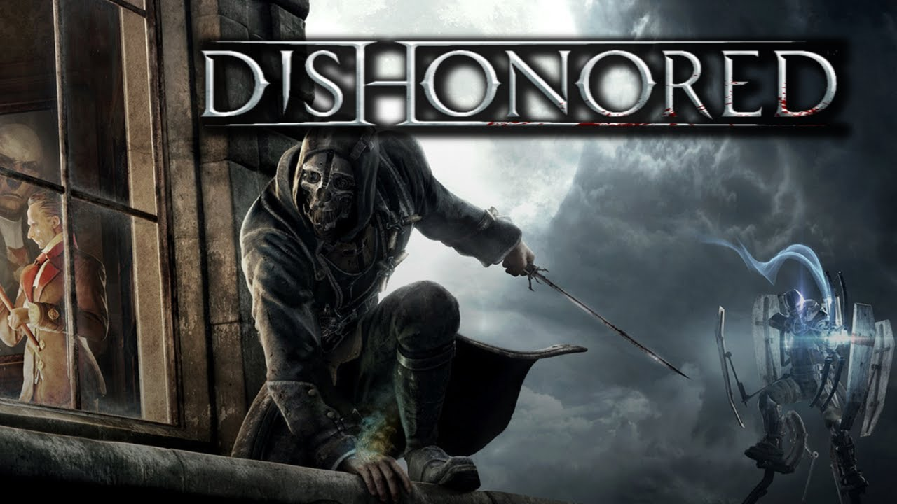

Dishonored

PLATFORMY
PC
X360
PS3
------

Wiecej Zdj.
Osadzona w steampunkowych klimatach pierwszoosobowa gra akcji z elementami skradanki. Dishonored jest dziełem studia Arcane, znanego przede wszystkim za sprawą hack'n'slasha Dark Messiah of Might & Magic.
Dishonored wydane na platformę PC, PS3 i X360 to innowacyjna mieszanka typowego FPS-a i skradanki, w której dokonywane wybory i preferowany styl gry wpływają na przebieg rozgrywki i otoczenie bohatera. Fikcyjne miasto Dunwall, które zwiedzamy w czasie przygód, czerpie z estetyki steampunka i epoki wiktoriańskiej. Za produkcję gry odpowiedzialne jest francuskie studio Arkane, założone przez Rafa Colantonio, twórcę takich tytułów jak Arx Fatalis czy Dark Messiah of Might & Magic. Doświadczony zespół Colantonio wspiera także Harvey Smith, współtwórca dwóch pierwszych części Deus Ex, oraz Viktor Antonov, który odpowiadał za projekty City 17 z Half Life 2.
FABUŁA
W Dishonored gracz wciela się w postać Corvo Attano, legendarnego Lorda Protektora cesarzowej Jessamine Kaldwin, zamordowanej w zamachu stanu uknutym przez ambitnego Hirama Burrowsa, Lorda Regenta. Ten, aby odwrócić uwagę od przejęcia przez siebie władzy i uprowadzenia małej Emily, dziedziczki tronu, oskarża o obie zbrodnie głównego bohatera. Choć Corvo jest jednym z najniebezpieczniejszych ludzi na świecie, doświadczonym wojownikiem i zabójcą, niechybnie zginąłby w więzieniu, gdyby nie niespodziewana interwencja sojuszników, którzy dostarczają mu środków pozwalających wyrwać się na wolność. Wkrótce potem bohater zostaje naznaczony przez tajemnicze bóstwo o ambiwalentnych zamiarach, znane jako Odmieniec (ang. The Outsider), w wyniku czego zdobywa nadnaturalne zdolności. Przywdziawszy maskę zabójcy, Corvo wyrusza na krwawą vendettę, by odnaleźć Emily i ukarać tych, którzy zabili jej matkę.
W Dishonored gracz wciela się w postać Corvo Attano, legendarnego Lorda Protektora cesarzowej Jessamine Kaldwin, zamordowanej w zamachu stanu uknutym przez ambitnego Hirama Burrowsa, Lorda Regenta. Ten, aby odwrócić uwagę od przejęcia przez siebie władzy i uprowadzenia małej Emily, dziedziczki tronu, oskarża o obie zbrodnie głównego bohatera. Choć Corvo jest jednym z najniebezpieczniejszych ludzi na świecie, doświadczonym wojownikiem i zabójcą, niechybnie zginąłby w więzieniu, gdyby nie niespodziewana interwencja sojuszników, którzy dostarczają mu środków pozwalających wyrwać się na wolność. Wkrótce potem bohater zostaje naznaczony przez tajemnicze bóstwo o ambiwalentnych zamiarach, znane jako Odmieniec (ang. The Outsider), w wyniku czego zdobywa nadnaturalne zdolności. Przywdziawszy maskę zabójcy, Corvo wyrusza na krwawą vendettę, by odnaleźć Emily i ukarać tych, którzy zabili jej matkę.
MECHANIKA
Kluczowym elementem rozgrywki w wydanym na PC, PS3 i X360 Dishonored jest wykonywanie starannie zaplanowanych zabójstw. Twórcy zainspirowani serią Thief przygotowali dopracowaną mechanikę skradania, postawili też na swobodę ruchu bohatera, wykorzystanie jego nadludzkich zdolności i gadżetów. Corvo bez problemu potrafi zniknąć z oczu nieprzyjaciół, używając szeregu wymyślnych gadżetów (klucze „hakujące” zabezpieczenia, strzałki usypiające itp.), a dzięki mocom może przenikać wzrokiem ściany, teleportować się na krótki dystans, a nawet na moment zatrzymać czas czy opętać cel, przez moment przebywając w skórze wybranego celu. Mimo tego gra nie wymusza cichego i dyskretnego przechodzenia kolejnych misji – nic nie stoi na przeszkodzie, by każdemu wykonywanemu zadaniu towarzyszyła krwawa jatka, a zniesławiony Lord Protektor siekał wrogów na kawałki mieczem, wysadzał granatami, czy rozrywał na strzępy przy pomocy min z drutu brzytwiastego. Wszystko zależy od preferencji grającego. Moce bohatera można łączyć z innymi, osiągając rozmaite efekty. Jeśli strażnicy do nas strzelają, możemy na przykład zatrzymać na chwilę czas, a następnie opętać jednego z nich i ustawić go tak, by stanął na torze lotu jego własnej kuli. To tylko jedna z opcji, jakimi dysponujemy – każdy napotkany problem ma wiele rozwiązań i to my decydujemy, które z nich wybrać.
Kluczowym elementem rozgrywki w wydanym na PC, PS3 i X360 Dishonored jest wykonywanie starannie zaplanowanych zabójstw. Twórcy zainspirowani serią Thief przygotowali dopracowaną mechanikę skradania, postawili też na swobodę ruchu bohatera, wykorzystanie jego nadludzkich zdolności i gadżetów. Corvo bez problemu potrafi zniknąć z oczu nieprzyjaciół, używając szeregu wymyślnych gadżetów (klucze „hakujące” zabezpieczenia, strzałki usypiające itp.), a dzięki mocom może przenikać wzrokiem ściany, teleportować się na krótki dystans, a nawet na moment zatrzymać czas czy opętać cel, przez moment przebywając w skórze wybranego celu. Mimo tego gra nie wymusza cichego i dyskretnego przechodzenia kolejnych misji – nic nie stoi na przeszkodzie, by każdemu wykonywanemu zadaniu towarzyszyła krwawa jatka, a zniesławiony Lord Protektor siekał wrogów na kawałki mieczem, wysadzał granatami, czy rozrywał na strzępy przy pomocy min z drutu brzytwiastego. Wszystko zależy od preferencji grającego. Moce bohatera można łączyć z innymi, osiągając rozmaite efekty. Jeśli strażnicy do nas strzelają, możemy na przykład zatrzymać na chwilę czas, a następnie opętać jednego z nich i ustawić go tak, by stanął na torze lotu jego własnej kuli. To tylko jedna z opcji, jakimi dysponujemy – każdy napotkany problem ma wiele rozwiązań i to my decydujemy, które z nich wybrać.
WYMAGANIA
Minimalne:
Brak informacji.
Rekomendowane:
Quad Core i5 2.4 GHz, 4 GB RAM, karta grafiki 768 MB (GeForce 8800 GTX lub lepsza), 9 GB HDD, Vista/7
Quad Core i5 2.4 GHz, 4 GB RAM, karta grafiki 768 MB (GeForce 8800 GTX lub lepsza), 9 GB HDD, Vista/7
Minimalne:
Brak informacji.
PEGI


Język Gry

PL napisy, EN napisy i dialogi